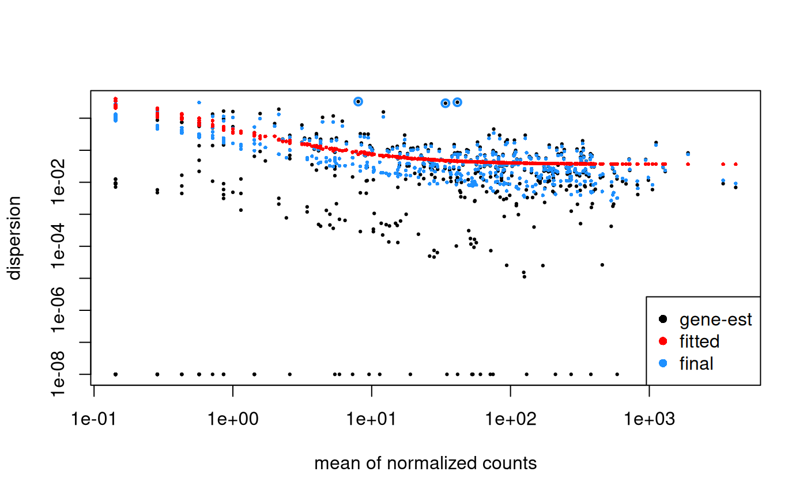
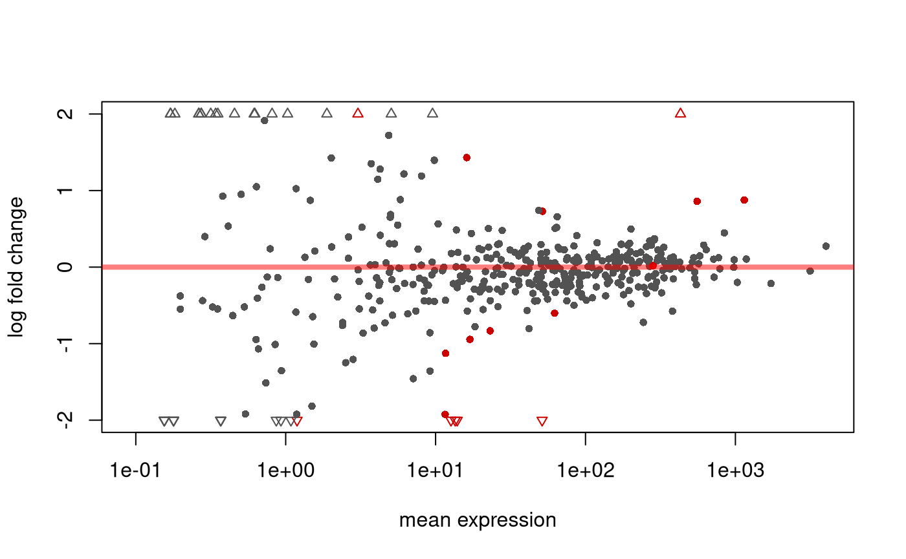
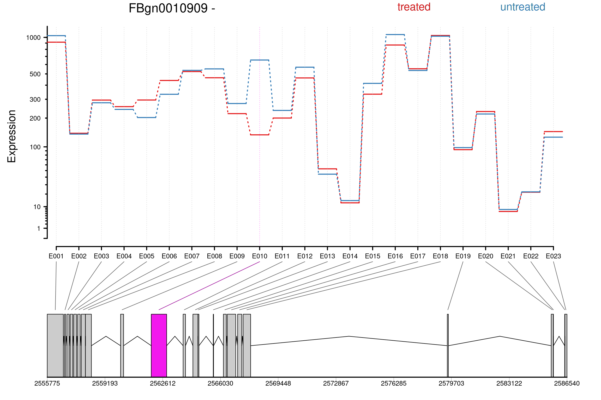
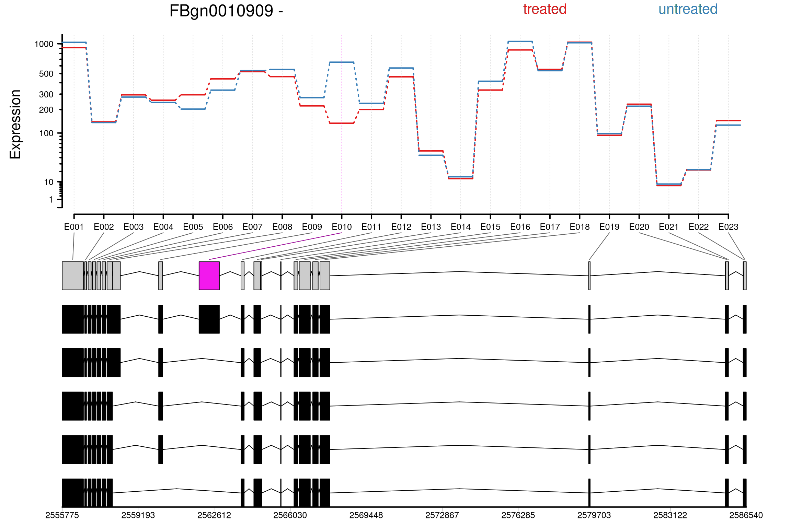
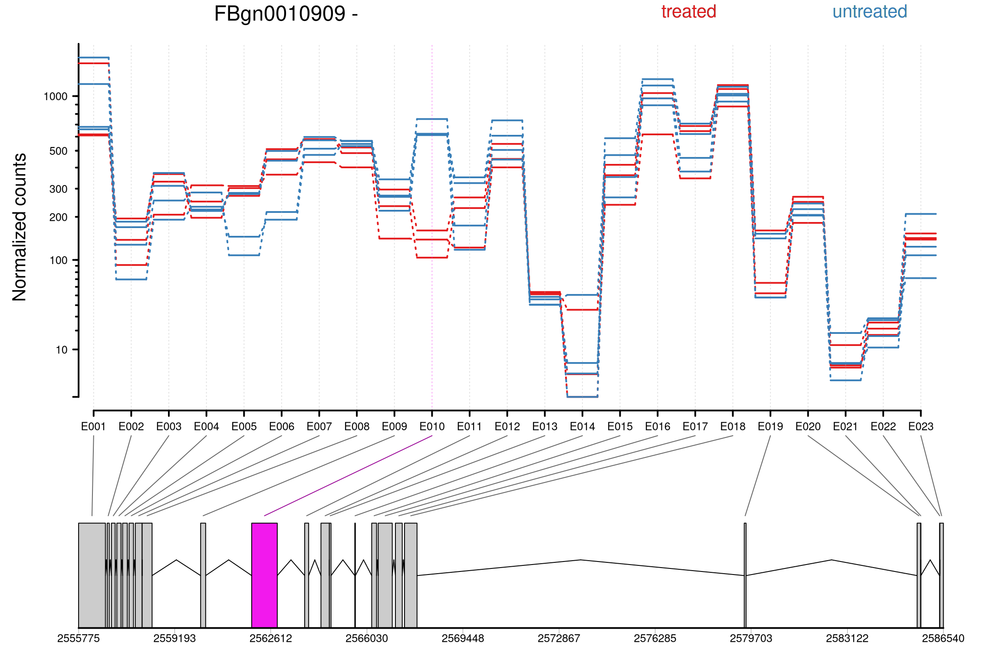
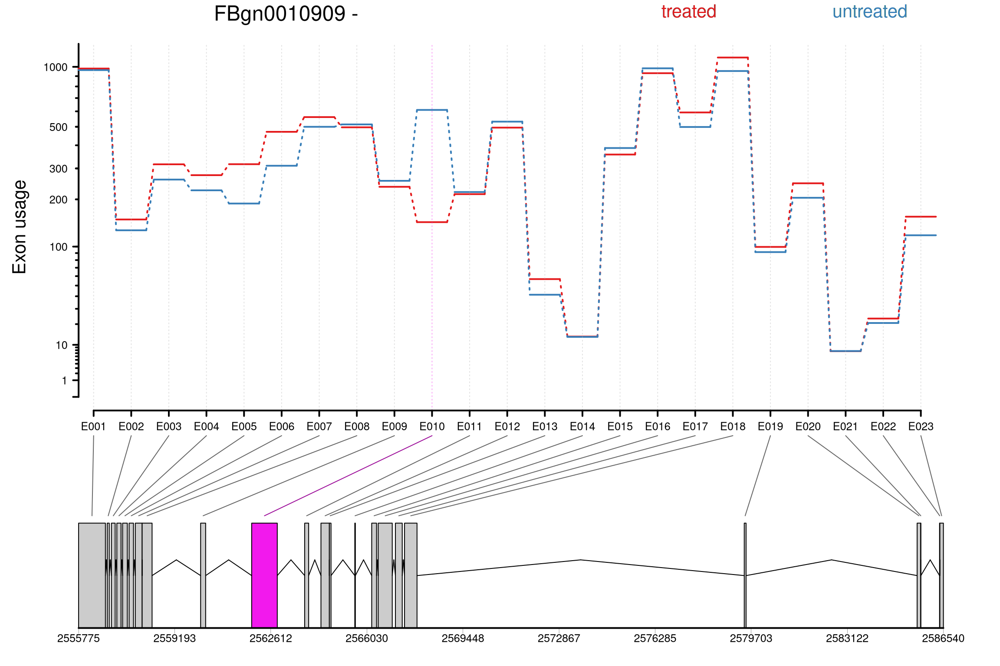

Alejandro Reyes
Dana-Farber Cancer Institute, Boston, USASimon Anders
Heidelberg University, Heidelberg, USAWolfgang Huber
European Molecular Biology Laboratory, Heidelberg, GermanyDEXSeq.RmdAbstract
The Bioconductor package DEXSeq implements a method to test for differential exon usage in comparative RNA-Seq experiments. By differential exon usage (DEU), we mean changes in the relative usage of exons caused by the experimental condition. The relative usage of an exon is defined as . The statistical method used by DEXSeq was introduced in our paper (Anders et al. 2012). The basic concept can be summarized as follows. For each exon (or part of an exon) and each sample, we count how many reads map to this exon and how many reads map to any of the other exons of the same gene. We consider the ratio of these two counts, and how it changes across conditions, to infer changes in the relative exon usage. In the case of an inner exon, a change in relative exon usage is typically due to a change in the rate with which this exon is spliced into transcripts (alternative splicing). Note, however, that DEU is a more general concept than alternative splicing, since it also includes changes in the usage of alternative transcript start sites and polyadenylation sites, which can cause differential usage of exons at the 5’ and 3’ boundary of transcripts. DEXSeq package version: 1.59.1
Overview
Similar as with differential gene expression, we need to make sure that observed differences of exon usage values between conditions are statistically significant, i.e., are sufficiently unlikely to be just due to random fluctuations such as those seen even between samples from the same condition, i.e., between replicates. To this end, DEXSeq assesses the strength of these fluctuations (quantified by the so-called dispersion) by comparing replicates before comparing the averages between the sample groups.
The preceding description is somewhat simplified (and perhaps over-simplified), and we recommend that users consult the publication for a more complete description, as well as Appendix @ref(methodChanges) of this vignette, which describes how the current implementation of DEXSeq differs from the original approach described in the paper. Nevertheless, two important aspects should be mentioned already here: First, DEXSeq does not actually work on the exon usage ratios, but on the counts in the numerator and denominator, to be able to make use of the information that is contained in the magnitude of count values. For example, 3000 reads versus 1000 reads is the same ratio as 3 reads versus 1 read, but the latter is a far less reliable estimate of the underlying true value, because of statistical sampling. Second, DEXSeq is not limited to simple two-group comparisons; rather, it uses so-called generalized linear models (GLMs) to permit ANOVA-like analysis of potentially complex experimental designs.
Preparations
Example data
To demonstrate the use of DEXSeq, we use the pasilla dataset, an RNA-Seq dataset generated by (Brooks et al. 2011). They investigated the effect of siRNA knock-down of the gene pasilla on the transcriptome of fly S2-DRSC cells. The RNA-binding protein pasilla protein is thought to be involved in the regulation of splicing. (Its mammalian orthologs, NOVA1 and NOVA2, are well-studied examples of splicing factors.) Brooks et al. prepared seven cell cultures, treated three with siRNA to knock-down pasilla and left four as untreated controls, and performed RNA-Seq on all samples. They deposited the raw sequencing reads with the NCBI Gene Expression Omnibus (GEO) under the accession number GSE18508.
Executability of the code
Usually, Bioconductor vignettes contain automatically executable code, i.e., you can follow the vignette by directly running the code shown, using functionality and data provided with the package. However, it would not be practical to include the voluminous raw data of the pasilla experiment here. Therefore, the code in the alignment section is not automatically executable. You may download the raw data yourself from GEO, as well as the required extra tools, and follow the work flow shown here and in the pasilla vignette (Reyes 2013). From Section @ref(standard-analysis-workflow) on, code is directly executable, as usual. Therefore, we recommend that you just read this section, and try following our analysis in R only from the next section onwards. Once you work with your own data, you will want to come back and adapt the workflow shown here to your data.
Alignment
The first step of the analysis is to align the reads to a reference genome. If you are using classic alignment methods (i.e. not pseudo-alignment approaches) it is important to align them to the genome, not to the transcriptome, and to use a splice-aware aligner (i.e., a short-read alignment tool that can deal with reads that span across introns) such as TopHat2 (Kim et al. 2013), GSNAP (Wu and Nacu 2010), or STAR (Dobin et al. 2013). The explanation of the analysis workflow presented here starts with the aligned reads in the SAM format. If you are unfamiliar with the process of aligning reads to obtain SAM files, you can find a summary how we proceeded in preparing the pasilla data in the vignette for the pasilla data package (Reyes 2013) and a more extensive explanation, using the same data set, in our protocol article on differential expression calling (Anders et al. 2013).
Preparing the annotation
In a transcript annotations such as a GTF file, many exons appear multiple times, once for each transcript that contains them. We need to “collapse” or “flatten” this information to define exon counting bins, i.e., a list of intervals, each corresponding to one exon or part of an exon. Counting bins for parts of exons arise when an exonic region appears with different boundaries in different transcripts. See Figure 1 of the DEXSeq paper (Anders et al. (2012)) for an illustration.
Here we use the function exonicParts() of the package
GenomicFeatures
to define exonic counting bins. First, we download a annotation file
from ENSEMBL in GTF format, create an txdb
object and then run the exonicParts() function.
library(GenomicFeatures) # for the exonicParts() function
library(txdbmaker) # for the makeTxDbFromGFF() function
download.file(
"https://ftp.ensembl.org/pub/release-62/gtf/drosophila_melanogaster/Drosophila_melanogaster.BDGP5.25.62.gtf.gz",
destfile="Drosophila_melanogaster.BDGP5.25.62.gtf.gz")
txdb = makeTxDbFromGFF("Drosophila_melanogaster.BDGP5.25.62.gtf.gz")
file.remove("Drosophila_melanogaster.BDGP5.25.62.gtf.gz")## [1] TRUE
flattenedAnnotation = exonicParts( txdb, linked.to.single.gene.only=TRUE )
names(flattenedAnnotation) =
sprintf("%s:E%0.3d", flattenedAnnotation$gene_id, flattenedAnnotation$exonic_part)Note that the code above first converted the annotation GTF file into a transcriptDb object, but transcripts could also start from txdb objects available as Bioconductor packages or from objects available through AnnotationHub.
Counting reads
For each BAM file, we count the number of reads that overlap with each of the exon counting bin defined in the previous section. The read counting step is performed by the summarizeOverlaps() function of the GenomicAlignments package. To demonstrate this step, we will use a subset of the pasilla BAM files that are available through the pasillaBamSubset package.
library(pasillaBamSubset)
library(Rsamtools)
library(GenomicAlignments)
library(GenomeInfoDb)
bamFiles = c( untreated1_chr4(), untreated3_chr4() )
bamFiles = BamFileList( bamFiles )
seqlevelsStyle(flattenedAnnotation) = "UCSC"
se = summarizeOverlaps(
flattenedAnnotation, BamFileList(bamFiles), singleEnd=FALSE,
fragments=TRUE, ignore.strand=TRUE )All singleEnd=, fragments=,
ignore.strand= and strandMode= are important
parameters to tune and are dataset specific. Two alternative ways to do
the read counting process are the HTSeq python scripts
provided with DEXSeq and
the Rsubread
package. Both of these approaches are described in the appendix section
of this vignette.
Building a DEXSeqDataSet
We can use the function DEXSeqDataSetFromSE() to build
an DEXSeqDataSet object. In a well-designed
experiment, we would specify the conditions of the experiment in the
colData() slot of the object. Since we have only two
samples in our example, we just exemplify this step by specify the
sample names as conditions.
library(DEXSeq)
colData(se)$condition = factor(c("untreated1", "untreated3"))
colData(se)$libType = factor(c("single-end", "paired-end"))
dxd = DEXSeqDataSetFromSE( se, design= ~ sample + exon + condition:exon )## Warning in DESeqDataSet(rse, design, ignoreRank = TRUE): some variables in
## design formula are characters, converting to factorsStandard analysis workflow
Loading and inspecting the example data
To demonstrate the rest of the work flow we will use a DEXSeqDataSet that contains a subset of the data with only a few genes. This example object is available through the pasilla package.
data(pasillaDEXSeqDataSet, package="pasilla")The DEXSeqDataSet class is derived from the
DESeqDataSet. As such, it contains the usual
accessor functions for the column data, row data, and some specific
ones. The core data in an DEXSeqDataSet object
are the counts per exon. Each row of the
DEXSeqDataSet contains in each column the
count data from a given exon (‘this’) as well as the count data from the
sum of the other exons belonging to the same gene (‘others’). This
annotation, as well as all the information regarding each column of the
DEXSeqDataSet, is specified in the
colData().
colData(dxd)## DataFrame with 14 rows and 4 columns
## sample condition type exon
## <factor> <factor> <factor> <factor>
## 1 treated1fb treated single-read this
## 2 treated2fb treated paired-end this
## 3 treated3fb treated paired-end this
## 4 untreated1fb untreated single-read this
## 5 untreated2fb untreated single-read this
## ... ... ... ... ...
## 10 treated3fb treated paired-end others
## 11 untreated1fb untreated single-read others
## 12 untreated2fb untreated single-read others
## 13 untreated3fb untreated paired-end others
## 14 untreated4fb untreated paired-end othersWe can access the first 5 rows from the count data by doing,
## [,1] [,2] [,3] [,4] [,5] [,6] [,7] [,8] [,9] [,10] [,11] [,12]
## FBgn0000256:E001 92 28 43 54 131 51 49 1390 829 923 1115 2495
## FBgn0000256:E002 124 80 91 76 224 82 95 1358 777 875 1093 2402
## FBgn0000256:E003 340 241 262 347 670 260 297 1142 616 704 822 1956
## FBgn0000256:E004 250 189 201 219 507 242 250 1232 668 765 950 2119
## FBgn0000256:E005 96 38 39 71 76 57 62 1386 819 927 1098 2550
## [,13] [,14]
## FBgn0000256:E001 1054 1052
## FBgn0000256:E002 1023 1006
## FBgn0000256:E003 845 804
## FBgn0000256:E004 863 851
## FBgn0000256:E005 1048 1039Note that the number of columns is 14, the first seven (we have seven samples) corresponding to the number of reads mapping to out exonic regions and the last seven correspond to the sum of the counts mapping to the rest of the exons from the same gene on each sample.
## $this
## [1] 1 2 3 4 5 6 7
##
## $others
## [1] 8 9 10 11 12 13 14We can also access only the first five rows from the count belonging to the exonic regions (‘this’) (without showing the sum of counts from the rest of the exons from the same gene) by doing,
head( featureCounts(dxd), 5 )## treated1fb treated2fb treated3fb untreated1fb untreated2fb
## FBgn0000256:E001 92 28 43 54 131
## FBgn0000256:E002 124 80 91 76 224
## FBgn0000256:E003 340 241 262 347 670
## FBgn0000256:E004 250 189 201 219 507
## FBgn0000256:E005 96 38 39 71 76
## untreated3fb untreated4fb
## FBgn0000256:E001 51 49
## FBgn0000256:E002 82 95
## FBgn0000256:E003 260 297
## FBgn0000256:E004 242 250
## FBgn0000256:E005 57 62In both cases, the rows are labelled with gene IDs (here Flybase IDs), followed by a colon and the counting bin number. Since a counting bin corresponds to an exon or part of an exon, this ID is called the feature ID or exon ID within DEXSeq. The table content indicates the number of reads that have been mapped to each counting bin in the respective sample.
To see details on the counting bins, we also print the first 3 lines of the feature data annotation:
head( rowRanges(dxd), 3 )## GRanges object with 3 ranges and 5 metadata columns:
## seqnames ranges strand | featureID groupID
## <Rle> <IRanges> <Rle> | <character> <character>
## FBgn0000256:E001 chr2L 3872658-3872947 - | E001 FBgn0000256
## FBgn0000256:E002 chr2L 3873019-3873322 - | E002 FBgn0000256
## FBgn0000256:E003 chr2L 3873385-3874395 - | E003 FBgn0000256
## exonBaseMean exonBaseVar
## <numeric> <numeric>
## FBgn0000256:E001 64.000 1250.67
## FBgn0000256:E002 110.286 2769.57
## FBgn0000256:E003 345.286 22147.90
## transcripts
## <list>
## FBgn0000256:E001 FBtr0077511,FBtr0077513,FBtr0077512,...
## FBgn0000256:E002 FBtr0077511,FBtr0077513,FBtr0077512,...
## FBgn0000256:E003 FBtr0077511,FBtr0077513,FBtr0077512,...
## -------
## seqinfo: 14 sequences from an unspecified genome; no seqlengthsSo far, this table contains information on the annotation data, such as gene and exon IDs, genomic coordinates of the exon, and the list of transcripts that contain an exon.
The accessor function annotationData() shows the design
table with the sample annotation (which was passed as the second
argument to DEXSeqDataSetFromHTSeq()):
sampleAnnotation( dxd )## DataFrame with 7 rows and 3 columns
## sample condition type
## <factor> <factor> <factor>
## 1 treated1fb treated single-read
## 2 treated2fb treated paired-end
## 3 treated3fb treated paired-end
## 4 untreated1fb untreated single-read
## 5 untreated2fb untreated single-read
## 6 untreated3fb untreated paired-end
## 7 untreated4fb untreated paired-endIn the following sections, we will update the object by calling a
number of analysis functions, always using the idiom
dxd = someFunction( dxd ), which takes the
dxd object, fills in the results of the
performed computation and writes the returned and updated object back
into the variable dxd.
Normalisation
DEXSeq
uses the same method as DESeq and
DESeq2,
which is provided in the function
estimateSizeFactors().
dxd = estimateSizeFactors( dxd )Dispersion estimation
To test for differential exon usage, we need to estimate the variability of the data. This is necessary to be able to distinguish technical and biological variation (noise) from real effects on exon usage due to the different conditions. The information on the strength of the noise is inferred from the biological replicates in the data set and characterized by the so-called dispersion. In RNA-Seq experiments the number of replicates is typically too small to reliably estimate variance or dispersion parameters individually exon by exon, and therefore, variance information is shared across exons and genes, in an intensity-dependent manner.
In this section, we discuss simple one-way designs: In this setting,
samples with the same experimental condition, as indicated in the
condition factor of the design table (see above), are
considered as replicates – and therefore, the design table needs to
contain a column with the name condition. In Section
@ref(complexdesigns), we discuss how to treat more complicated
experimental designs which are not accommodated by a single condition
factor.
To estimate the dispersion estimates, DEXSeq uses the approach of the package DESeq2. Internally, the functions from DEXSeq are called, adapting the parameters of the functions for the specific case of the DEXSeq model. Briefly, per-exon dispersions are calculated using a Cox-Reid adjusted profile likelihood estimation, then a dispersion-mean relation is fitted to this individual dispersion values andfinally, the fitted values are taken as a prior in order to shrink the per-exon estimates towards the fitted values. See the DESeq2 paper for the rational behind the shrinkage approach (Love et al. (2014)).
dxd = estimateDispersions( dxd )As a shrinkage diagnostic, the
DEXSeqDataSet inherits the method
plotDispEsts() that plots the per-exon dispersion estimates
versus the mean normalised count, the resulting fitted valuesand the
a posteriori (shrinked) dispersion estimates (Figure
@ref(fig:fitdiagnostics)).
plotDispEsts( dxd )
Fit Diagnostics. The initial per-exon dispersion estimates (shown by black points), the fitted mean-dispersion values function (red line), and the shrinked values in blue
Testing for differential exon usage
Having the dispersion estimates and the size factors, we can now test
for differential exon usage. For each gene, DEXSeq
fits a generalized linear model with the formula
~sample + exon + condition:exon and compare it to the
smaller model (the null model) ~ sample + exon.
In these formulae (which use the standard notation for linear model
formulae in R; consult a text book on
R if you are unfamiliar with it), sample
is a factor with different levels for each sample,
condition is the factor of experimental conditions that we
defined when constructing the DEXSeqDataSet
object at the beginning of the analysis, and exon is a
factor with two levels, this and others, that
were specified when we generated our
DEXSeqDataSet object. The two models described
by these formulae are fit for each counting bin, where the data supplied
to the fit comprise two read count values for each
sample, corresponding to the two levels of the exon factor:
the number of reads mapping to the bin in question (level
this), and the sum of the read counts from all other bins
of the same gene (level others). Note that this approach
differs from the approach described in the paper (Anders et al. (2012)) and used in older versions
of DEXSeq;
see Appendix @ref(methodChanges) for further discussion.
We have an interaction term condition:exon, but denote
no main effect for condition. Note, however, that all
observations from the same sample are also from the same condition,
i.e., the condition main effects are absorbed in the
sample main effects, because the sample factor
is nested within the condition factor.
The deviances of both fits are compared using a
-distribution,
providing a
value. Based on this
-value,
we can decide whether the null model is sufficient to explain the data,
or whether it may be rejected in favour of the alternative model, which
contains an interaction coefficient for condition:exon. The
latter means that the fraction of the gene’s reads that fall onto the
exon under the test differs significantly between the experimental
conditions.
The function testForDEU() performs these tests for each
exon in each gene.
dxd = testForDEU( dxd )The resulting DEXSeqDataSet object contains slots with information regarding the test.
For some uses, we may also want to estimate relative exon usage fold
changes. To this end, we call estimateExonFoldChanges().
Exon usage fold changes are calculated based on the coefficients of a
GLM fit that uses the formula
count ~ condition + exon + condition:exon
where condition can be replaced with any of the column
names of colData() (see man pages for details). The
resulting coefficients allow the estimation of changes on the usage of
exons across different conditions. Note that the differences on exon
usage are distinguished from gene expression differences across
conditions. For example, consider the case of a gene that is
differentially expressed between conditions and has one exon that is
differentially used between conditions. From the coefficients of the
fitted model, it is possible to distinguish overall gene expression
effects, that alter the counts from all the exons, from exon usage
effects, that are captured by the interaction term
condition:exon and that affect the each exon
individually.
dxd = estimateExonFoldChanges( dxd, fitExpToVar="condition")So far in the pipeline, the intermediate and final results have been
stored in the meta data of a DEXSeqDataSet
object, they can be accessed using the function mcols(). In
order to summarize the results without showing the values from
intermediate steps, we call the function DEXSeqResults().
The result is a DEXSeqResults object, which is
a subclass of a DataFrame object.
dxr1 = DEXSeqResults( dxd )
dxr1##
## LRT p-value: full vs reduced
##
## DataFrame with 498 rows and 13 columns
## groupID featureID exonBaseMean dispersion stat
## <character> <character> <numeric> <numeric> <numeric>
## FBgn0000256:E001 FBgn0000256 E001 58.3431 0.01719172 8.23523e-06
## FBgn0000256:E002 FBgn0000256 E002 103.3328 0.00734737 1.57577e+00
## FBgn0000256:E003 FBgn0000256 E003 326.4763 0.01048065 3.57358e-02
## FBgn0000256:E004 FBgn0000256 E004 253.6548 0.01100420 1.69541e-01
## FBgn0000256:E005 FBgn0000256 E005 60.6377 0.04402967 2.91053e-02
## ... ... ... ... ... ...
## FBgn0261573:E012 FBgn0261573 E012 23.08422 0.0219840 8.400785
## FBgn0261573:E013 FBgn0261573 E013 9.79723 0.2475512 1.155232
## FBgn0261573:E014 FBgn0261573 E014 87.49678 0.0330407 1.118567
## FBgn0261573:E015 FBgn0261573 E015 268.25566 0.0120126 2.598309
## FBgn0261573:E016 FBgn0261573 E016 304.15134 0.0998526 0.146584
## pvalue padj treated untreated
## <numeric> <numeric> <numeric> <numeric>
## FBgn0000256:E001 0.997710 1 10.8820 11.0275
## FBgn0000256:E002 0.209370 1 13.5722 13.2500
## FBgn0000256:E003 0.850062 1 18.6029 18.9103
## FBgn0000256:E004 0.680520 1 17.2692 17.7029
## FBgn0000256:E005 0.864536 1 11.1006 10.9937
## ... ... ... ... ...
## FBgn0261573:E012 0.00375059 0.097736 8.47412 6.61692
## FBgn0261573:E013 0.28245649 1.000000 3.79997 5.97080
## FBgn0261573:E014 0.29022728 1.000000 11.94851 13.19130
## FBgn0261573:E015 0.10697781 0.965623 17.26506 18.42453
## FBgn0261573:E016 0.70182189 1.000000 18.14410 18.91295
## log2fold_untreated_treated genomicData
## <numeric> <GRanges>
## FBgn0000256:E001 0.0513596 chr2L:3872658-3872947:-
## FBgn0000256:E002 -0.1036538 chr2L:3873019-3873322:-
## FBgn0000256:E003 0.0895553 chr2L:3873385-3874395:-
## FBgn0000256:E004 0.1283218 chr2L:3874450-3875302:-
## FBgn0000256:E005 -0.0375699 chr2L:3878895-3879067:-
## ... ... ...
## FBgn0261573:E012 -0.832683 chrX:19421654-19421867:+
## FBgn0261573:E013 1.395559 chrX:19422668-19422673:+
## FBgn0261573:E014 0.410997 chrX:19422674-19422856:+
## FBgn0261573:E015 0.341489 chrX:19422927-19423634:+
## FBgn0261573:E016 0.224594 chrX:19423707-19424937:+
## countData transcripts
## <matrix> <list>
## FBgn0000256:E001 92:28:43:... FBtr0077511,FBtr0077513,FBtr0077512,...
## FBgn0000256:E002 124:80:91:... FBtr0077511,FBtr0077513,FBtr0077512,...
## FBgn0000256:E003 340:241:262:... FBtr0077511,FBtr0077513,FBtr0077512,...
## FBgn0000256:E004 250:189:201:... FBtr0077511,FBtr0077513,FBtr0077512,...
## FBgn0000256:E005 96:38:39:... FBtr0077511,FBtr0077513,FBtr0077512,...
## ... ... ...
## FBgn0261573:E012 37:23:38:... FBtr0302863
## FBgn0261573:E013 8:3:6:... FBtr0302863,FBtr0302864
## FBgn0261573:E014 75:66:92:... FBtr0302862,FBtr0302863,FBtr0302864
## FBgn0261573:E015 264:234:245:... FBtr0302862,FBtr0302863,FBtr0302864
## FBgn0261573:E016 611:187:188:... FBtr0302862,FBtr0302863,FBtr0302864The description of each of the column of the object DEXSeqResults can be found in the metadata columns.
mcols(dxr1)$description## [1] "group/gene identifier"
## [2] "feature/exon identifier"
## [3] "mean of the counts across samples in each feature/exon"
## [4] "exon dispersion estimate"
## [5] "LRT statistic: full vs reduced"
## [6] "LRT p-value: full vs reduced"
## [7] "BH adjusted p-values"
## [8] "exon usage coefficient"
## [9] "exon usage coefficient"
## [10] "relative exon usage fold change"
## [11] "GRanges object of the coordinates of the exon/feature"
## [12] "matrix of integer counts, of each column containing a sample"
## [13] "list of transcripts overlapping with the exon"From this object, we can ask how many exonic regions are significant with a false discovery rate of 10%:
table ( dxr1$padj < 0.1 )##
## FALSE TRUE
## 426 17We may also ask how many genes are affected
##
## FALSE TRUE
## 20 9Remember that our example data set contains only a selection of genes. We have chosen these to contain interesting cases; so the fact that such a large fraction of genes is significantly affected here is not typical.
To see how the power to detect differential exon usage depends on the
number of reads that map to an exon, a so-called MA plot is useful,
which plots the logarithm of fold change versus average normalized count
per exon and marks by red colour the exons which are considered
significant; here, the exons with an adjusted
values of less than
(Figure @ref(fig:MvsA). There is of course nothing special about the
number
,
and you can specify other thresholds in the call to
plotMA().
plotMA( dxr1, cex=0.8 )
MA plot. Mean expression versus fold change plot. Significant hits at an are coloured in red.
Additional technical or experimental variables
In the previous section we performed a simple analysis of
differential exon usage, in which each sample was assigned to one of two
experimental conditions. If your experiment is of this type, you can use
the work flow shown above. All you have to make sure is that you
indicate which sample belongs to which experimental condition when you
construct the DEXSeqDataSet object. Do so by
means of a column called condition in the sample table.
If you have a more complex experimental design, you can provide different or additional columns in the sample table. You then have to indicate the design by providing explicit formulae for the test.
In the pasilla dataset, some samples were sequenced in single-end and others in paired-end mode. Possibly, this influenced counts and should hence be accounted for. We therefore use this as an example for a complex design.
When we constructed the DEXSeqDataSet, we
provided in the colData() an additional column called
type, which has been stored in the object:
sampleAnnotation(dxd)## DataFrame with 7 rows and 4 columns
## sample condition type sizeFactor
## <factor> <factor> <factor> <numeric>
## 1 treated1fb treated single-read 1.335944
## 2 treated2fb treated paired-end 0.799585
## 3 treated3fb treated paired-end 0.922477
## 4 untreated1fb untreated single-read 0.990899
## 5 untreated2fb untreated single-read 1.567992
## 6 untreated3fb untreated paired-end 0.838396
## 7 untreated4fb untreated paired-end 0.830056We specify two design formulae, which indicate that the
type factor should be treated as
a blocking factor:
formulaFullModel = ~ sample + exon + type:exon + condition:exon
formulaReducedModel = ~ sample + exon + type:exon Compare these formulae with the default formulae given in previous
sections. We have added, in both the full model and the reduced model,
the term type:exon. Therefore, any dependence of exon usage
on library type will be absorbed by this term and accounted for equally
in the full and a reduced model, and the likelihood ratio test comparing
them will only detect differences in exon usage that can be attributed
to condition, independent of type.
Next, we estimate the dispersions. This time, we need to inform the
estimateDispersions() function about our design by
providing the full model’s formula, which should be used instead of the
default formula.
dxd = estimateDispersions( dxd, formula = formulaFullModel )The test function now needs to be informed about both formulae
dxd = testForDEU( dxd,
reducedModel = formulaReducedModel,
fullModel = formulaFullModel )Finally, we get a summary table, as before.
dxr2 = DEXSeqResults( dxd )How many significant DEU cases have we got this time?
table( dxr2$padj < 0.1 )##
## FALSE TRUE
## 393 22We can now compare with the previous result:
table( before = dxr1$padj < 0.1, now = dxr2$padj < 0.1 )## now
## before FALSE TRUE
## FALSE 392 6
## TRUE 1 16Accounting for the library type has allowed us to find six more hits, which confirms that accounting for the covariate improves power.
Visualization
The plotDEXSeq() provides a means to visualize the
results of an analysis.
plotDEXSeq( dxr2, "FBgn0010909", legend=TRUE, cex.axis=1.2, cex=1.3, lwd=2 )
Fitted expression. The plot represents the expression estimates from a
call to testForDEU(). Shown in red is the exon that showed
significant differential exon usage.
The result is shown in Figure @ref(fig:plot1). This plot shows the
fitted expression values of each of the exons of gene
FBgn0010909, for each of the two conditions, treated and
untreated. The function plotDEXSeq() expects at least two
arguments, the DEXSeqDataSet object and the
gene ID. The option legend=TRUE causes a legend to be
included. The three remaining arguments in the code chunk above are
ordinary plotting parameters which are simply handed over to
R standard plotting functions. They are not
strictly needed and included here to improve appearance of the plot. See
the help page for par() for details.
Optionally, one can also visualize the transcript models (Figure @ref(fig:plot2)), which can be useful for putting differential exon usage results into the context of isoform regulation.
plotDEXSeq( dxr2, "FBgn0010909", displayTranscripts=TRUE, legend=TRUE, cex.axis=1.2, cex=1.3, lwd=2 )
Transcripts. As in the previous plots, but including the annotated transcript models
Other useful options are to look at the count values from the
individual samples, rather than at the model effect estimates. For this
display (option norCounts=TRUE), the counts are normalized
by dividing them by the size factors (Figure @ref(fig:plot3))
plotDEXSeq( dxr2, "FBgn0010909", expression=FALSE, norCounts=TRUE,
legend=TRUE, cex.axis=1.2, cex=1.3, lwd=2 )
Normalized counts. As in the previous plots, with normalized count values of each exon in each of the samples.
As explained in Section @ref(overview), DEXSeq is
designed to find changes in relative exon usage, i.e., changes in the
expression of individual exons that are not simply the consequence of
overall up- or down-regulation of the gene. To visualize such changes,
it is sometimes advantageous to remove overall changes in expression
from the plots. Use the option splicing=TRUE for this
purpose.
plotDEXSeq( dxr2, "FBgn0010909", expression=FALSE, splicing=TRUE,
legend=TRUE, cex.axis=1.2, cex=1.3, lwd=2 )
Fitted splicing. As in the previous plots, but after subtraction of overall changes in gene expression.
To generate an easily browsable, detailed overview over all analysis
results, the package provides an HTML report generator, implemented in
the function DEXSeqHTML(). This function uses the package
hwriter (Pau and Huber 2009) to create a result table
with links to plots for the significant results, allowing a more
detailed exploration of the results.
DEXSeqHTML( dxr2, FDR=0.1, color=c("#FF000080", "#0000FF80") )Parallelization and large number of samples
DEXSeq
analyses can be computationally heavy, especially with data sets that
comprise a large number of samples, or with genomes containing genes
with large numbers of exons. While some steps of the analysis work on
the whole data set, the computational load can be parallelized for some
steps. We use the package BiocParallel,
and implemented the BPPARAM= parameter of the functions
estimateDispersions(), testForDEU() and
estimateExonFoldChanges():
BPPARAM = BiocParallel::MulticoreParam(4)
dxd = estimateSizeFactors( dxd )
dxd = estimateDispersions( dxd, BPPARAM=BPPARAM)
dxd = testForDEU( dxd, BPPARAM=BPPARAM)
dxd = estimateExonFoldChanges(dxd, BPPARAM=BPPARAM)For running analysis with a large number of samples (e.g. more than
20), we recommend configuring BatchJobsParam() classes in
order to distribute the calculations across a computer cluster and
significantly reduce running times. Users might also consider reducing
the number of tests by filtering for lowly expressed isoforms or exonic
regions with low counts. Appart from reducing running times, this
filtering step also leads to more accurate results (Soneson et al. 2016).
Nevertheless, DEXSeq was designed to work with small sample numbers, and users might have to consider alternatives for large numbers of samples such as the diffSplice function from limma, satuRn or non-parametric approaches for exon usage testing.
Perform a standard differential exon usage analysis in one command
In the previous sections, we went through the analysis step by step.
Once you are sufficiently confident about the work flow for your data,
its invocation can be streamlined by the wrapper function
DEXseq(), which runs the analysis shown above through a
single function call.
In the simplest case, construct the
DEXSeqDataSet as shown before, then run
DEXSeq() passing the
DEXSeqDataSet as only argument, this function
will output a DEXSeqResults object.
## [1] "DEXSeqResults"
## attr(,"package")
## [1] "DEXSeq"Appendix
Controlling FDR at the gene level
DEXSeq returns one -value for each exonic region. Using these p-values, a rejection threshold is established according to a multiple testing correction method. Consider a setting with exonic regions, where is the -value for the exonic region and is a rejection threshold, leading to rejections (i.e. number of exonic regions being DEU). The Benjamini-Hochberg method establishes that FDR is controlled at the level where
.
Note that in the denominator of this expression is the probability of rejecting a single hypothesis if it is true. allows to estimate the number of exons that are differentially used at a specific FDR.
However, sometimes it is informative to know what is the FDR at the gene level, i.e. knowing the numer of genes with at least one differentially used exon while keeping control of FDR. For this scenario, let be the -value from the DEU test for exon in gene , let the number of exons in gene , and the number of genes. A gene has at least one DEU exon if such that . Then, FDR is controlled at the level
.
The implementation of the formula above is provided by the function
perGeneQValue(). For the pasilla
example, the code below calculates the number of genes (at a FDR of 10%)
with at least one differentially used exon.
numbOfGenes = sum( perGeneQValue(dxr) < 0.1)
numbOfGenes## [1] 9Preprocessing with python
Preparing the annotation file with python
The preprocessing steps of the analysis are done using two Python scripts that we provide with DEXSeq.
You do not need to know how to use Python; however you have to install the Python package HTSeq, following the explanations given on the HTSeq web page.
Once you have installed HTSeq, you can use the two Python scripts, dexseq_prepare_annotation.py and dexseq_count.py, that come with the DEXSeq package. If you have trouble finding them, start R and ask for the installation directory with:
pythonScriptsDir = system.file( "python_scripts", package="DEXSeq" )
list.files(pythonScriptsDir)## [1] "dexseq_count.py" "dexseq_prepare_annotation.py"
system.file( "python_scripts", package="DEXSeq", mustWork=TRUE )## [1] "/home/runner/work/_temp/Library/DEXSeq/python_scripts"The displayed path should contain the two files. If it does not, try
to re-install DEXSeq (as
usual, with the function BiocManager::install()). An
alternative work flow, which replaces the two Python-based steps with R
based code, is also available in the Appendix section of this
vignette.
The Python scripts expect a GTF file with gene models for your species. We have tested our tools chiefly with GTF files from Ensembl and hence recommend to use these, as files from other providers sometimes do not adhere fully to the GTF standard and cause the preprocessing to fail. Ensembl GTF files can be found in the “FTP Download” sections of the Ensembl web sites (i.e., Ensembl, EnsemblPlants, EnsemblFungi, etc.). Make sure that your GTF file uses a coordinate system that matches the reference genome that you have used for aligning your reads. The safest way to ensure this is to download the reference genome from Ensembl, too. If you cannot use an Ensembl GTF file, see Appendix @ref(requirements-on-gtf-files) for advice on converting GFF files from other sources to make them suitable as input for the dexseq_prepare_annotation.py script.
In a GTF file, many exons appear multiple times, once for each transcript that contains them. We need to “collapse” this information to define exon counting bins, i.e., a list of intervals, each corresponding to one exon or part of an exon. Counting bins for parts of exons arise when an exonic region appears with different boundaries in different transcripts. See Figure 1 of the DEXSeq paper (Anders et al. (2012)) for an illustration. The Python script dexseq_prepare_annotation.py takes an Ensembl GTF file and translates it into a GFF file with collapsed exon counting bins.
Make sure that your current working directory contains the GTF file and call the script (from the command line shell, not from within R) with
python /path/to/library/DEXSeq/python_scripts/dexseq_prepare_annotation.py Drosophila_melanogaster.BDGP5.72.gtf Dmel.BDGP5.25.62.DEXSeq.chr.gffIn this command, which should be entered as a single line, replace
/path/to…/python_scripts with the correct path to the Python
scripts, which you have found with the call to
system.file() shown above.
Drosophila_melanogaster.BDGP5.72.gtf is the Ensembl GTF file
(here the one for fruit fly, already de-compressed) and
Dmel.BDGP5.25.62.DEXSeq.chr.gff is the name of the output
file.
In the process of forming the counting bins, the script might come
across overlapping genes. If two genes on the same strand are found with
an exon of the first gene overlapping with an exon of the second gene,
the script’s default behaviour is to combine the genes into a single
“aggregate gene” which is subsequently referred to with the IDs of the
individual genes, joined by a plus (‘+’) sign. If you do not like this
behaviour, you can disable aggregation with the option
-r no. Without aggregation, exons that overlap with other
exons from different genes are simply skipped.
Counting reads with python
Read counting is done with the script python_count.py:
python /path/to/library/DEXSeq/python_scripts/dexseq_count.py Dmel.BDGP5.25.62.DEXSeq.chr.gff untreated1.sam untreated1fb.txtThis command (again, to be entered as a single line) expects two files in the current working directory, namely the GFF file produced in the previous step (here Dmel.BDGP5.25.62.DEXSeq.chr.gff) and a SAM file with the aligned reads from a sample (here the file untreated1.sam with the aligned reads from the first control sample). The command generates an output file, here called untreated1fb.txt, with one line for each exon counting bin defined in the flattened GFF file. The lines contain the exon counting bin IDs (which are composed of gene IDs and exon bin numbers), followed by a integer number which indicates the number of reads that were aligned such that they overlap with the counting bin.
Use the script multiple times to produce a count file from each of your SAM files.
There are a number of crucial points to pay attention to when using the python_count.py script:
Paired-end data: If your data is from a paired-end
sequencing run, you need to add the option -p yes to the
command to call the script. (As usual, options have to be placed before
the file names, surrounded by spaces.) In addition, the SAM file needs
to be sorted, either by read name or by position. Most aligners produce
sorted SAM files; if your SAM file is not sorted, use
samtools sort -n to sort by read name (or
samtools sort) to sort by position. (See Anders et al. (2013), if you need further
explanations on how to sort SAM files.) Use the option
-r pos or -r name to indicate whether your
paired-end data is sorted by alignment position or by read name.
Strandedness: By default, the counting script
assumes your library to be strand-specific, i.e., reads are
aligned to the same strand as the gene they originate from. If you have
used a library preparation protocol that does not preserve strand
information (i.e., reads from a given gene can appear equally likely on
either strand), you need to inform the script by specifying the option
-s no. If your library preparation protocol reverses the
strand (i.e., reads appear on the strand opposite to their gene of
origin), use -s reverse. In case of paired-end data, the
default (-s yes) means that the read from the first
sequence pass is on the same strand as the gene and the read from the
second pass on the opposite strand (“forward-reverse” or “fr” order in
the parlance of the Bowtie/TopHat manual) and the options
-s reverse specifies the opposite case.
SAM and BAM files: By default, the script expects
its input to be in plain-text SAM format. However, it can also read BAM
files, i.e., files in the the compressed binary variant of the SAM
format. If you wish to do so, use the option -f bam. This
works only if you have installed the Python package pysam.
Alignment quality: The scripts takes a further
option, -a to specify the minimum alignment quality (as
given in the fifth column of the SAM file). All reads with a lower
quality than specified (with default -a 10) are
skipped.
Help pages: Calling either script without arguments displays a help page with an overview of all options and arguments.
Reading the data from the python ouputs into R
The remainder of the analysis is now done in R. We will use the output of the python scripts for the pasilla experiment, that can be found in the package pasilla. Open an R session and type:
inDir = system.file("extdata", package="pasilla")
countFiles = list.files(inDir, pattern="fb.txt$", full.names=TRUE)
basename(countFiles)## [1] "treated1fb.txt" "treated2fb.txt" "treated3fb.txt" "untreated1fb.txt"
## [5] "untreated2fb.txt" "untreated3fb.txt" "untreated4fb.txt"
flattenedFile = list.files(inDir, pattern="gff$", full.names=TRUE)
basename(flattenedFile)## [1] "Dmel.BDGP5.25.62.DEXSeq.chr.gff"Now, we need to prepare a sample table. This table should contain one row for each library, and columns for all relevant information such as name of the file with the read counts, experimental conditions, technical information and further covariates. To keep this vignette simple, we construct the table on the fly.
sampleTable = data.frame(
row.names = c( "treated1", "treated2", "treated3",
"untreated1", "untreated2", "untreated3", "untreated4" ),
condition = c("knockdown", "knockdown", "knockdown",
"control", "control", "control", "control" ),
libType = c( "single-end", "paired-end", "paired-end",
"single-end", "single-end", "paired-end", "paired-end" ) )While this is a simple way to prepare the table, it may be less
error-prone and more prudent to used an existing table that had already
been prepared when the experiments were done, save it in CSV format and
use the R function read.csv() to load
it.
In any case, it is vital to check the table carefully for correctness.
sampleTable## condition libType
## treated1 knockdown single-end
## treated2 knockdown paired-end
## treated3 knockdown paired-end
## untreated1 control single-end
## untreated2 control single-end
## untreated3 control paired-end
## untreated4 control paired-endOur table contains the sample names as row names and the two covariates that vary between samples: first the experimental condition (factor condition with levels control and treatment) and the library type (factor libType), which we included because the samples in this particular experiment were sequenced partly in single-end runs and partly in paired-end runs. For now, we will ignore this latter piece of information, and postpone the discussion of how to include such additional covariates to Section @ref(complexdesigns). If you have only a single covariate and want to perform a simple analysis, the column with this covariate should be named condition.
Now, we construct an DEXSeqDataSet object
from this data. This object holds all the input data and will be passed
along the stages of the subsequent analysis. We construct the object
with the function DEXSeqDataSetFromHTSeq(), as follows:
library( "DEXSeq" )
dxd = DEXSeqDataSetFromHTSeq(
countFiles,
sampleData=sampleTable,
design= ~ sample + exon + condition:exon,
flattenedfile=flattenedFile )## Warning in DESeqDataSet(rse, design, ignoreRank = TRUE): some variables in
## design formula are characters, converting to factorsThe function takes four arguments. First, a vector with names of
count files, i.e., of files that have been generated with the
dexseq_count.py script. The function will read these files and
arrange the count data in a matrix, which is stored in the
DEXSeqDataSet object dxd. The
second argument is our sample table, with one row for each of the files
listed in the first argument. This information is simply stored as is in
the object’s meta-data slot (see below). The third argument is a formula
of the form ~ sample + exon + condition:exon that specifies
the contrast with of a variable from the sample table columns and the
‘exon’ variable. Using this formula, we are interested
in differences in exon usage due to the “condition” variable changes.
Later in this vignette, we will how to add additional variables for
complex designs. The fourth argument is a file name, now of the
flattened GFF file that was generated with
dexseq_prepare_annotation.py and used as input to
dexseq_count.py when creating the count file.
Preprocessing using featureCounts
As an alternative to HTSeq, one could use the function
featureCounts() to count the number of reads overlapping
with each exonic region. The output files from
featureCounts() can then be used as input to DEXSeq. In this
Github repository, Vivek Bhardwaj provides scripts and
documentation that integrate featureCounts() with DEXSeq. He
also provides a function to import the count files into
R and generate a
DEXSeqDataSet object.
Further accessors
The function geneIDs() returns the gene ID column of the
feature data as a character vector, and the function
exonIDs() return the exon ID column as a
factor.
## [1] "FBgn0000003" "FBgn0000008" "FBgn0000008" "FBgn0000008" "FBgn0000008"
## [6] "FBgn0000008"## [1] "E001" "E001" "E002" "E003" "E004" "E005"These functions are useful for subsetting an DEXSeqDataSet object.
Overlap operations
The methods subsetByOverlaps() and
findOverlaps() have been implemented for the
DEXSeqResults object, the query=
argument must be a DEXSeqResults object.
interestingRegion = GRanges( "chr2L",
IRanges(start=3872658, end=3875302) )
subsetByOverlaps( x=dxr, ranges=interestingRegion )##
## LRT p-value: full vs reduced
##
## DataFrame with 4 rows and 16 columns
## groupID featureID exonBaseMean dispersion stat
## <character> <character> <numeric> <numeric> <numeric>
## FBgn0000256:E001 FBgn0000256 E001 58.3431 0.01719172 8.23523e-06
## FBgn0000256:E002 FBgn0000256 E002 103.3328 0.00734737 1.57577e+00
## FBgn0000256:E003 FBgn0000256 E003 326.4763 0.01048065 3.57358e-02
## FBgn0000256:E004 FBgn0000256 E004 253.6548 0.01100420 1.69541e-01
## pvalue padj treated untreated
## <numeric> <numeric> <numeric> <numeric>
## FBgn0000256:E001 0.997710 1 10.8820 11.0275
## FBgn0000256:E002 0.209370 1 13.5722 13.2500
## FBgn0000256:E003 0.850062 1 18.6029 18.9103
## FBgn0000256:E004 0.680520 1 17.2692 17.7029
## log2fold_untreated_treated treated.1 untreated.1
## <numeric> <numeric> <numeric>
## FBgn0000256:E001 0.0513596 10.8820 11.0275
## FBgn0000256:E002 -0.1036538 13.5722 13.2500
## FBgn0000256:E003 0.0895553 18.6029 18.9103
## FBgn0000256:E004 0.1283218 17.2692 17.7029
## log2fold_untreated_treated.1 genomicData
## <numeric> <GRanges>
## FBgn0000256:E001 0.0513596 chr2L:3872658-3872947:-
## FBgn0000256:E002 -0.1036538 chr2L:3873019-3873322:-
## FBgn0000256:E003 0.0895553 chr2L:3873385-3874395:-
## FBgn0000256:E004 0.1283218 chr2L:3874450-3875302:-
## countData transcripts
## <matrix> <list>
## FBgn0000256:E001 92:28:43:... FBtr0077511,FBtr0077513,FBtr0077512,...
## FBgn0000256:E002 124:80:91:... FBtr0077511,FBtr0077513,FBtr0077512,...
## FBgn0000256:E003 340:241:262:... FBtr0077511,FBtr0077513,FBtr0077512,...
## FBgn0000256:E004 250:189:201:... FBtr0077511,FBtr0077513,FBtr0077512,...
findOverlaps( query=dxr, subject=interestingRegion )## Hits object with 4 hits and 0 metadata columns:
## queryHits subjectHits
## <integer> <integer>
## [1] 1 1
## [2] 2 1
## [3] 3 1
## [4] 4 1
## -------
## queryLength: 498 / subjectLength: 1This functions could be useful for further downstream analysis.
Methodological changes since publication of the paper
In our paper (Anders et al. 2012), we suggested to fit for each exon a model that includes separately the counts for all the gene’s exons. However, this turned out to be computationally inefficient for genes with many exons, because the many exons required large model matrices, which are computationally expensive to deal with. We have therefore modified the approach: when fitting a model for an exon, we now sum up the counts from all the other exon and use only the total, rather than the individual counts in the model. Now, computation time per exon is independent of the number of other exons in the gene, which improved DEXSeq’s scalability. While the values returned by the two approaches are not exactly equal, the differences were very minor in the tests that we performed.
Deviating from the paper’s notation, we now use the index to indicate a specific counting bin, with running through all counting bins of all genes. The samples are indexed with , as in the paper. We write for the count or reads mapped to counting bin in sample and for the sum of the read counts from all other counting bins in the same gene. Hence, when we write , the third index indicates whether we mean the read count for bin () or the sum of counts for all other bins of the same gene (). As before, we fit a GLM of the negative binomial (NB) family $ K_{ijl} (=s_j_{ijl},=_i)$ and we write .
This model is fit separately for each counting bin
.
The coefficient
accounts for the sample-specific contribution (factor
sample), the term
is only included if
and hence estimates the logarithm of the ratio
between the counts for all other exons and the counts for the tested
exon. As this coefficient is estimated from data from all samples, it
can be considered as a measure of “average exon usage”. In the R model
formula, it is represented by the term exon with its two
levels this
()
and others
().
Finally, the last term,
,
captures the interaction condition:exon, i.e., the change
in exon usage if sample
is from experimental condition group
.
Here, the first condition,
,
is absorbed in the sample coefficients, i.e.,
is fixed to zero and does not appear in the model matrix.
For the dispersion estimation, one dispersion value is estimated with Cox-Reid-adjusted maximum likelihood using the full model given above. A mean-variance relation is fitted using the individual dispersion values. Finally, the individual values are shrinked towards the fitted values. For more details about this shrinkage approach look at the DESeq2 vignette and/or its manuscript (Love et al. 2014). For the likelihood ratio test, this full model is fit and compared with the fit of the reduced model, which lacks the interaction term . As described in Section @ref{complexdesigns}, alternative model formulae can be specified.
Requirements on GTF files
In the initial preprocessing step described in Section @ref{preparing-the-annotation}, the Python script dexseq_prepare_annotation.py is used to convert a GTF file with gene models into a GFF file with collapsed gene models. We recommend to use GTF files downloaded from Ensembl as input for this script, as files from other sources may deviate from the format expected by the script. Hence, if you need to use a GTF or GFF file from another source, you may need to convert it to the expected format. To help with this task, we here give details on how the dexseq_prepare_annotation.py script interprets a GFF file.
- The script only looks at
exonlines, i.e., at lines which contain the termexonin the third (“type”) column. All other lines are ignored. - Of the data in these lines, the information about chromosome, start,
end, and strand (1st, 4th, 5th, and 7th column) are used, and, from the
last column, the attributes
gene_idandtranscript_id. The rest is ignored. - The
gene_idattribute is used to see which exons belong to the same gene. It must be calledgene_id(and notParentas in GFF3 files, orGeneIDas in some older GFF files), and it must give the same identifier to all exons from the same gene, even if they are from different transcripts of this gene. (This last requirement is not met by GTF files generated by the Table Browser function of the UCSC Genome Browser.) - The
transcript_idattribute is used to build the transcripts attribute in the flattened GFF file, which indicates which transcripts contain the described counting bin. This information is needed only to draw the transcript model at the bottom of the plots when thedisplayTranscripts=option toplotDEXSeq()is used.
Therefore, converting a GFF file to make it suitable as input to
dexseq_prepare_annotation.py amounts to making sure that the
exon lines have type exon and that the atributes giving
gene ID (or gene symbol) and transcript ID are called
gene_id and transcript_id, with this exact
spelling. Remember to also take care that the chromosome names match
those in your SAM files, and that the coordinates refer to the reference
assembly that you used when aligning your reads.
Session Information
The session information records the versions of all the packages used in the generation of the present document.
## R Under development (unstable) (2026-11-06 r90845)
## Platform: x86_64-pc-linux-gnu
## Running under: Ubuntu 26.04.1 LTS
##
## Matrix products: default
## BLAS: /usr/lib/x86_64-linux-gnu/openblas-pthread/libblas.so.3
## LAPACK: /usr/lib/x86_64-linux-gnu/openblas-pthread/libopenblasp-r0.3.32.so; LAPACK version 3.12.0
##
## locale:
## [1] LC_CTYPE=C.UTF-8 LC_NUMERIC=C LC_TIME=C.UTF-8
## [4] LC_COLLATE=C.UTF-8 LC_MONETARY=C.UTF-8 LC_MESSAGES=C.UTF-8
## [7] LC_PAPER=C.UTF-8 LC_NAME=C LC_ADDRESS=C
## [10] LC_TELEPHONE=C LC_MEASUREMENT=C.UTF-8 LC_IDENTIFICATION=C
##
## time zone: UTC
## tzcode source: system (glibc)
##
## attached base packages:
## [1] stats4 stats graphics grDevices utils datasets methods
## [8] base
##
## other attached packages:
## [1] DEXSeq_1.59.1 DESeq2_1.53.7
## [3] SummarizedExperiment_1.43.0 MatrixGenerics_1.25.0
## [5] matrixStats_1.5.0 BiocParallel_1.47.0
## [7] GenomeInfoDb_1.49.2 GenomicAlignments_1.49.2
## [9] Rsamtools_2.29.0 Biostrings_2.81.9
## [11] XVector_0.53.0 pasillaBamSubset_0.51.0
## [13] txdbmaker_1.9.1 GenomicFeatures_1.65.0
## [15] AnnotationDbi_1.75.2 Biobase_2.73.2
## [17] GenomicRanges_1.65.4 Seqinfo_1.3.2
## [19] IRanges_2.47.5 S4Vectors_0.51.10
## [21] BiocGenerics_0.59.12 generics_0.1.4
## [23] BiocStyle_2.41.0
##
## loaded via a namespace (and not attached):
## [1] DBI_1.3.0 bitops_1.1-0 httr2_1.3.0
## [4] biomaRt_2.69.6 rlang_1.3.0 magrittr_2.0.5
## [7] otel_0.2.0 compiler_4.7.0 RSQLite_3.53.3
## [10] png_0.1-9 systemfonts_1.3.2 vctrs_0.7.3
## [13] stringr_1.6.0 pkgconfig_2.0.3 crayon_1.5.3
## [16] fastmap_1.2.0 dbplyr_2.6.0 rmarkdown_2.32
## [19] UCSC.utils_1.9.0 ragg_1.5.2 bit_4.6.0
## [22] xfun_0.62 cachem_1.1.0 cigarillo_1.3.1
## [25] jsonlite_2.0.0 progress_1.2.3 blob_1.3.0
## [28] DelayedArray_0.39.8 parallel_4.7.0 prettyunits_1.2.0
## [31] R6_2.6.1 bslib_0.12.0 stringi_1.8.9
## [34] RColorBrewer_1.1-3 rtracklayer_1.73.0 genefilter_1.95.0
## [37] jquerylib_0.1.4 Rcpp_1.1.2 bookdown_0.48
## [40] knitr_1.52 BiocBaseUtils_1.15.1 splines_4.7.0
## [43] Matrix_1.7-6 tidyselect_1.2.1 abind_1.4-8
## [46] yaml_2.3.12 codetools_0.2-20 hwriter_1.3.2.1
## [49] curl_8.1.0 lattice_0.23-1 tibble_3.3.1
## [52] KEGGREST_1.53.6 S7_0.2.2 evaluate_1.0.5
## [55] desc_1.4.3 survival_3.8-12 BiocFileCache_3.3.2
## [58] pillar_1.11.1 BiocManager_1.30.27 filelock_1.0.3
## [61] RCurl_1.98-1.20 hms_1.1.4 ggplot2_4.0.3
## [64] scales_1.4.0 xtable_1.8-8 glue_1.8.1
## [67] tools_4.7.0 BiocIO_1.23.3 annotate_1.91.0
## [70] locfit_1.5-9.12 fs_2.1.0 XML_3.99-0.25
## [73] grid_4.7.0 restfulr_0.0.17 cli_3.6.6
## [76] textshaping_1.0.5 S4Arrays_1.13.2 dplyr_1.2.1
## [79] gtable_0.3.6 sass_0.4.10 digest_0.6.39
## [82] SparseArray_1.13.4 geneplotter_1.91.0 rjson_0.2.23
## [85] farver_2.1.2 memoise_2.0.1 htmltools_0.5.9
## [88] pkgdown_2.2.1 lifecycle_1.0.5 httr_1.4.9
## [91] statmod_1.5.2 bit64_4.8.6